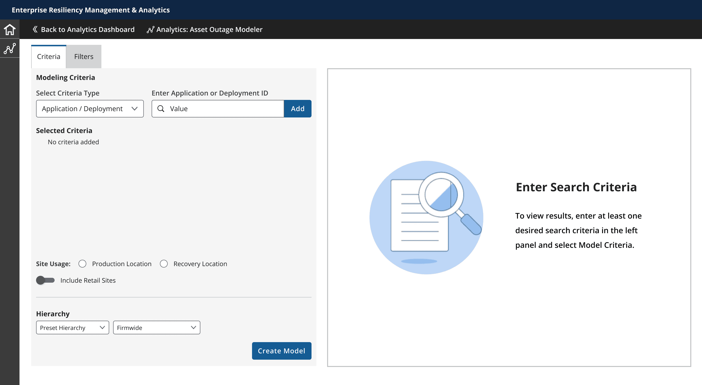
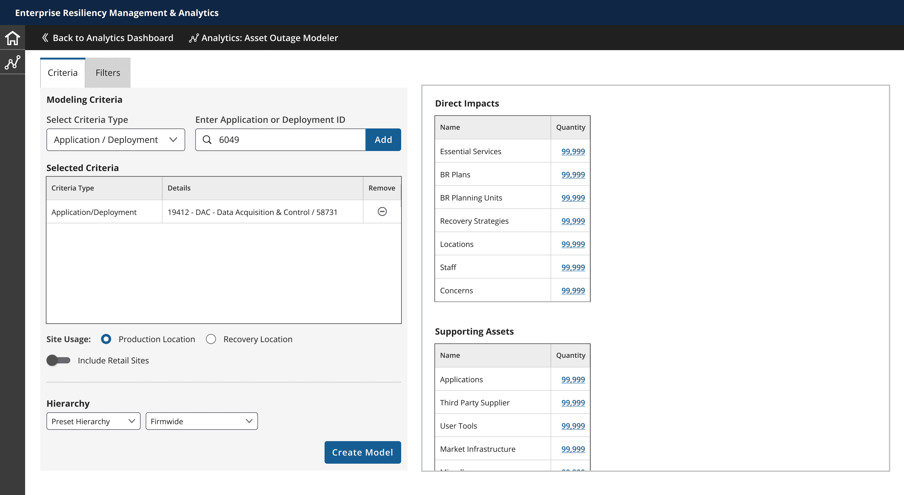
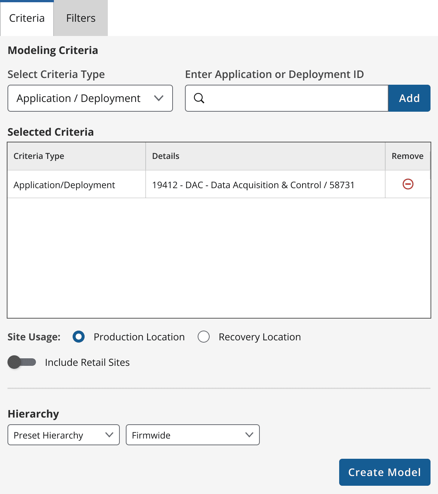
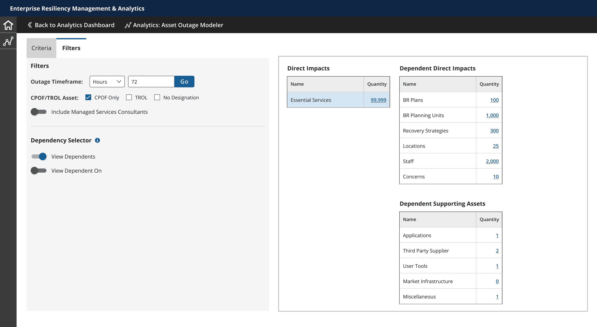
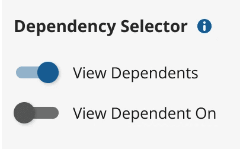
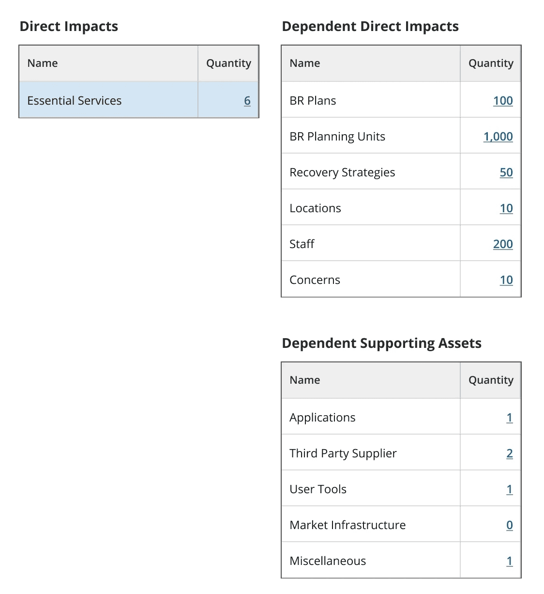
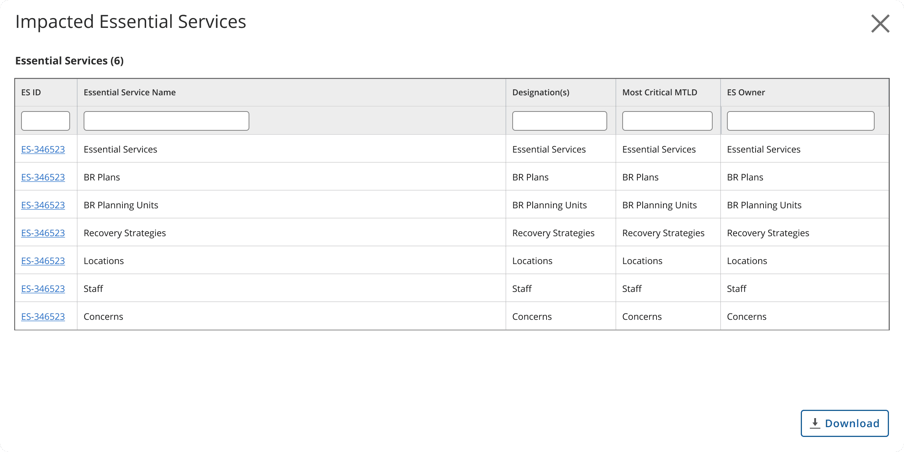

Walkthrough
The modeler from an empty state to a dependency view, recorded in the prototype. 34 seconds, no sound.
The Problem
J.P. Morgan Chase's disaster management team needed to model the impact of essential service outages and cascading failures across critical financial infrastructure — the kind of scenario planning that directly feeds emergency preparation and regulatory compliance. Without a purpose-built tool, that analysis relied on manual, calculation-heavy workflows that ate into the time analysts should have spent on the actual strategic judgment calls.
My Role
I served as Reporting and Analytics Lead, working end-to-end from strategy through scoping, design, and final delivery, on a team with a Design Lead (Bill Hess), a Disaster Management Specialist (Meghan Hensley), and a PM (Eric Albright). My workstream owned the reporting and analytics side of the tool and the client relationship for that stream directly.
Approach
I grounded the research in the disaster management team's actual workflow rather than assumptions: user interviews, workflow observation sessions, and a direct study of government disaster-readiness regulations, specifically to understand how dependencies between assets work in practice. That research surfaced a two-task core workflow — search across assets and compliance criteria, then map the interdependencies between them to expose cascading failure risk — and I used a concrete hypothetical scenario (modeling hurricane-season disruption to Florida's infrastructure) to keep every design decision tied to a real use case instead of an abstraction.
Workflow & dependencies
What the research produced: the analyst's task flow, and how assets depend on one another.
Click Add Criteria → back to Select criteria type, as needed
Model not correct → back to lane 1
Download → back to Click on number, as neededToggle → back to Select row, as neededSecond table → back to Select row, as needed
Analyst actionSystem responseOptional stepDecisionRepeat as needed


Loop — red in the originalLoop — green in the original

From that research, I made a specific interaction call: analysts needed to adjust their models without starting over, watching the impact of a criteria change in real time. That requirement drove a two-pane layout — criteria selection always visible on one side, the dependency view reacting live on the other — rather than a linear wizard-style flow that would have forced analysts to commit to criteria before seeing any impact. Because most analysts' actual workflow ended in Excel, I made data-table export a first-class action throughout, not an afterthought bolted onto the end.
Building a model
The same two-pane screen at each step, with the control that changed shown at full size beside it.
Fig. 5Empty state.Criteria panel on the left; the results pane explains what to do first.

Fig. 6Criteria added, model created.Direct Impacts and Supporting Assets fill the right pane; the criteria stay editable on the left.


Fig. 7Filters tab.Outage timeframe, CPOF/TROL asset filters and the Dependency Selector, with the results still in view.


Fig. 8Dependent impacts.With a dependency toggle on, selecting a row in Direct Impacts opens a second set of tables in the right pane.

Fig. 9Export.Clicking a quantity opens its data table in a modal; Download exports it for Excel.

Outcome
AOMT gave J.P. Morgan's disaster management analysts a tool that automated the calculation-heavy parts of outage modeling, so their time went toward strategic judgment instead of manual analysis — while integrating with the Excel-based habits analysts already had, rather than asking them to abandon their existing workflow.